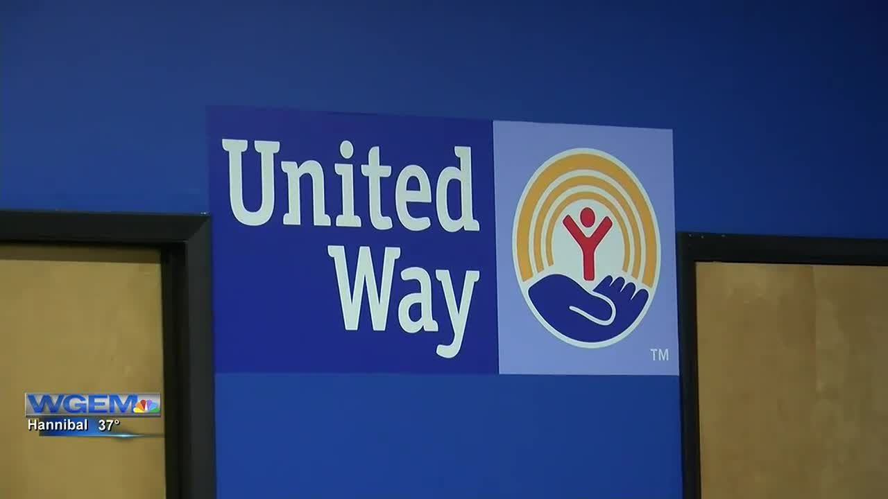
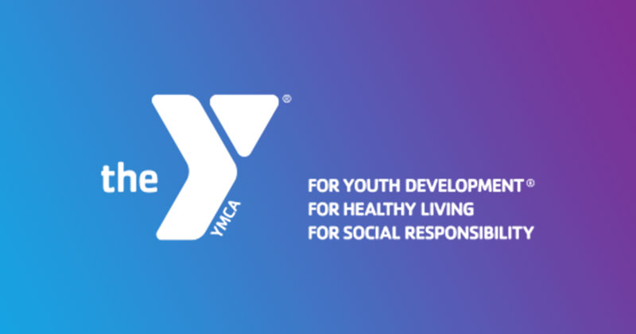
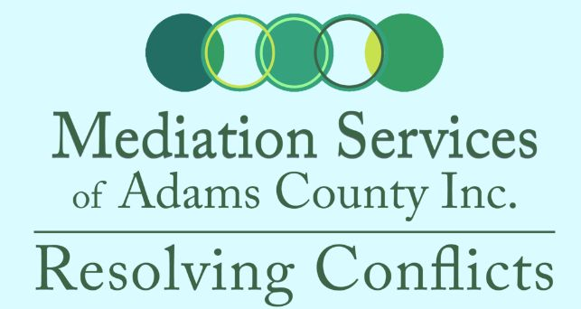
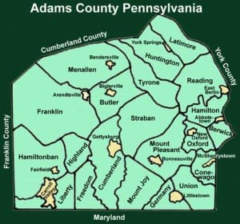
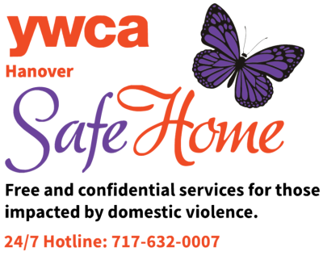
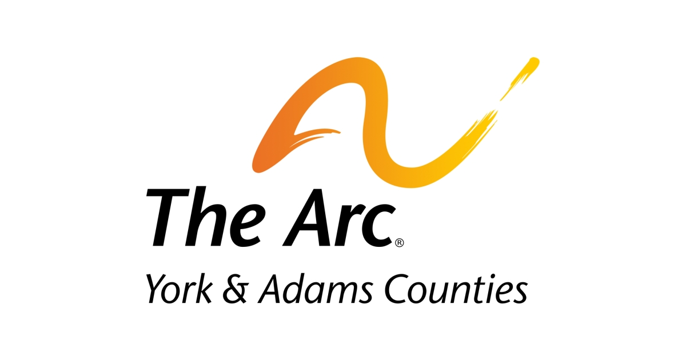
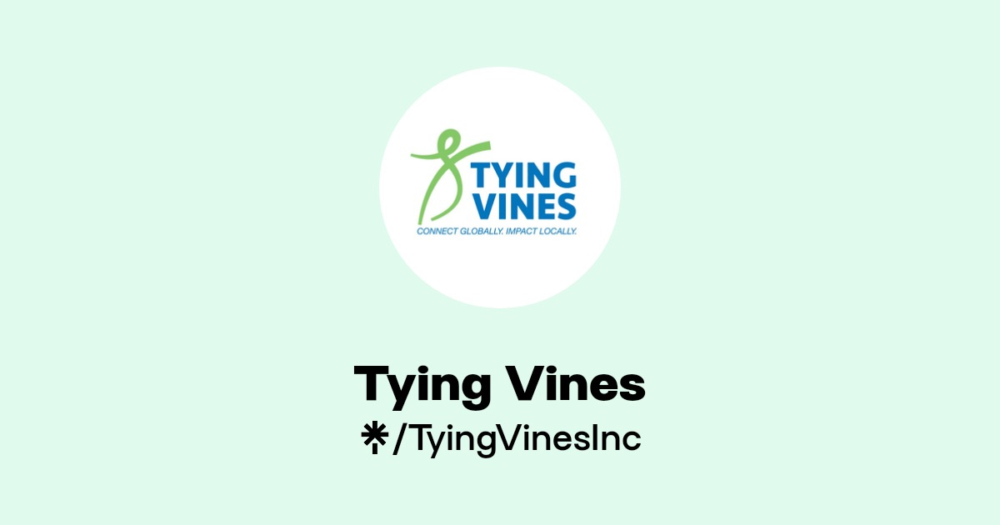

Human Services / Community Support
Community & Family Support
Penn State Extension
Penn State Extension translates leading-edge research into innovative, economical, and practical solutions to challenges facing Pennsylvania communities.

United Way of Adams CountyImproving lives by mobilizing the caring power of the Adams County community.

YMCA GettysburgA nonprofit organization offering child care, education enrichment, and empowerment programs for families and youth.
Dangerous Situations

Mediation Services of Adams CountyPromoting peaceful coexistence through mediation, productive communication, and acceptance of differences.

Adams County Crime StoppersPreventing crime through citizen involvement and community-based crime reduction.

YWCA Hanover Safe HomeProviding safety, shelter, and advocacy for individuals affected by domestic violence, grounded in dignity, empowerment, and choice.
Specialized Support

The Arc of York & Adams CountiesEmpowering individuals with intellectual and developmental disabilities while supporting families and educating communities.
Faith-Based

Tying Vines